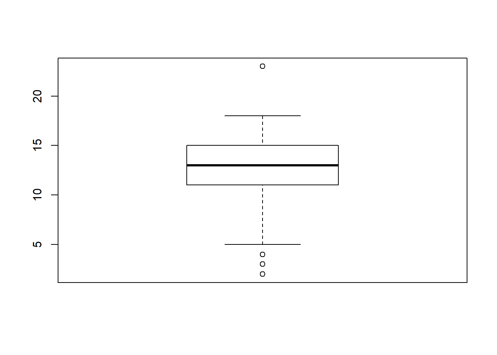

Web Scraping
Introduction
This case study aims to show how to get the information from a website and exploit statistically its contents. In general, we can think about this task, called web scraping, as a process involving the following three steps:
- Access to a web page.
- Download the source files that generate the web.
- Make the downloaded data understadable and proper to your goals.
The steps above could be done in many different ways, from completely automated implementations to a completely manual work. This time, I will use R to save some time and develope a repreduible code to give an answer to the problem above. We will make use of the rvest and xml2 packages.
To see other problems and learn more above it, I recommend to have a look to the following links:
The problem
I am willing to publish some contents from my thesis in the Journal of the American Statistical Association. However, I am afraid of bothering the Editor and Referees with a very long article.
One could simply ask to his/her experienced colleges or check the rules for submitting an article. Nevertheless, I prefer to empirical check the Journal’s standards by scraping a resonable set of information from its website’s 1.
Web Scraping in R
1. Accessing a page from R
First, we need to specify the web address to R and made R read the source files of the web (in particular the HTML). Suppose we will start from the last published issue.
Inspecting the target website
#Specifying the url
targetWeb <- "https://amstat.tandfonline.com/toc/uasa20/114/528?nav=tocList"
#reading the html content
JASAweb <- read_html(targetWeb)
#see elements
JASAweb %>% html_node("body") %>% html_children()## {xml_nodeset (5)}
## [1] <script>(function(w,d,s,l,i){w[l]=w[l]||[];w[l].push({'gtm.start':new Dat ...
## [2] <noscript><iframe src="https://www.googletagmanager.com/ns.html?id=GTM-W2 ...
## [3] <script type="text/javascript">\n if(false) {\n document.getEle ...
## [4] <script type="text/javascript">\n var content = $('[name="pbContex ...
## [5] <div id="pb-page-content" data-ng-non-bindable>\n<div data-pb-dropzone="m ...2. Teaching R how to find the information
Next, we will make use of HTML tags for extracting data using Inspect Element. Go to the web site and see the HTML tags.

Recognizing the information of interest.
In order to find out the class of the HTML tag, use the following steps:
Based on CSS selectors such as class and id, we will scrape the data from the HTML. To find the CSS class for the product title, we need to right-click on title and select “Inspect” or “Inspect Element”.
Finding out the tags.
pages_items <- JASAweb %>%
html_node("body") %>% xml_find_all("//div[contains(@class, 'tocPageRange maintextleft')]")
pages_items## {xml_nodeset (42)}
## [1] <div class="tocPageRange maintextleft">Pages: 1427-1435</div>\n
## [2] <div class="tocPageRange maintextleft">Pages: 1436-1449</div>\n
## [3] <div class="tocPageRange maintextleft">Pages: 1450-1465</div>\n
## [4] <div class="tocPageRange maintextleft">Pages: 1466-1480</div>\n
## [5] <div class="tocPageRange maintextleft">Pages: 1481-1492</div>\n
## [6] <div class="tocPageRange maintextleft">Pages: 1493-1504</div>\n
## [7] <div class="tocPageRange maintextleft">Pages: 1505-1517</div>\n
## [8] <div class="tocPageRange maintextleft">Pages: 1518-1531</div>\n
## [9] <div class="tocPageRange maintextleft">Pages: 1532-1546</div>\n
## [10] <div class="tocPageRange maintextleft">Pages: 1547-1560</div>\n
## [11] <div class="tocPageRange maintextleft">Pages: 1561-1573</div>\n
## [12] <div class="tocPageRange maintextleft">Pages: 1574-1596</div>\n
## [13] <div class="tocPageRange maintextleft">Pages: 1597-1601</div>\n
## [14] <div class="tocPageRange maintextleft">Pages: 1602-1604</div>\n
## [15] <div class="tocPageRange maintextleft">Pages: 1605-1610</div>\n
## [16] <div class="tocPageRange maintextleft">Pages: 1611-1615</div>\n
## [17] <div class="tocPageRange maintextleft">Pages: 1616-1619</div>\n
## [18] <div class="tocPageRange maintextleft">Pages: 1620-1637</div>\n
## [19] <div class="tocPageRange maintextleft">Pages: 1638-1650</div>\n
## [20] <div class="tocPageRange maintextleft">Pages: 1651-1664</div>\n
## ...3. Data arranging
Now we need to make the information understandable to R. The next chunk of code goes from a the HTML information to the numeric vector containning the length page of the last issue articles.
#arrage the data. Take html text, get the page number as a character and split.
auxPages <- pages_items %>% html_text() %>% substring(8) %>% strsplit("-")
#numeric vector with starting Pages and ending pages
startingPage <- unlist(lapply(auxPages, "[[", 1))
endingPage <- vector(mode="numeric", length = length(startingPage))
for( i in c(1:length(auxPages))){
if(length(auxPages[[i]])==2){ #more than 1 page issue
endingPage[i] <- auxPages[[i]][2]
}else{ #only have one page
endingPage[i] <- auxPages[[i]][1]
}
}
#numeric vector with starting Pages and ending pages
startingPage <- as.numeric(startingPage)
endingPage <- as.numeric(endingPage)
# lengh of the articles
paperLenght <- endingPage - startingPage + 1
#plot
summary(paperLenght)## Min. 1st Qu. Median Mean 3rd Qu. Max. NA's
## 2.0 11.0 13.0 12.3 15.0 23.0 1boxplot(paperLenght)
Going further
Unfortunately, one can not give a an unique solution for doing web scraping. Web scraping is problem driven and many different aspects/problems may emerge on the way. Two possible problems or extensions one might want to consider for the Case study are exposed in the following.
- We obtained the information of only one issue. This might lack on representativeness, in other words, what if did I take an special issue and my estimations are biased?
To solve this weakness, one could run the code developed above recursively to look for different issues. To do that, lets first embed all the code into a function called ‘scrapThis’ that has as argument the url and returns the lenght of the articles.
scrapThis <- function(targetWeb){
#reading the html content
JASAweb <- read_html(targetWeb)
#getting the relevant information
pages_items <- JASAweb %>%
html_node("body") %>% xml_find_all("//div[contains(@class, 'tocPageRange maintextleft')]")
#arranging the data
auxPages <- pages_items %>% html_text() %>% substring(8) %>% strsplit("-")
startingPage <- unlist(lapply(auxPages, "[[", 1))
endingPage <- vector(mode="numeric", length = length(startingPage))
for( i in c(1:length(auxPages))){
if(length(auxPages[[i]])==2){ #more than 1 page issue
endingPage[i] <- auxPages[[i]][2]
}else{ #only have one page
endingPage[i] <- auxPages[[i]][1]
}
}
#numeric vector with starting Pages and ending pages
startingPage <- as.numeric(startingPage)
endingPage <- as.numeric(endingPage)
# lengh of the articles and remove NA given by the list of Collaboratos
paperLenght <- endingPage - startingPage + 1
return(paperLenght)
}Then, we have to understand the url pattern that makes us to navigate from one issue to other. In this case, we have:
Understanding the url
As illustration, we will consider only the last 4 issues, belonging to the volume of the last year. One only needs to substitute in the url the number of the issue (528) by the previous one (527, 526, 525).
issuesToDownload <- c(525:528)
firsPartURL <- "https://amstat.tandfonline.com/toc/uasa20/114/"
lastPartURL <- "?nav=tocList"
lastVolumeURL <- paste0(firsPartURL, paste0(issuesToDownload, lastPartURL))The chunk of code that iteratively navigates and collect the lenght of the articles is the following:
paperLenghtAll <- vector(mode = "numeric", length = 0)
for(i in lastVolumeURL){
paperLenghtAll <- c(paperLenghtAll, scrapThis(i))
}We end up with the information of 172 articles from 2020’s Volume.
- Prior to any analysis, inspect your data.
summary(paperLenghtAll)## Min. 1st Qu. Median Mean 3rd Qu. Max. NA's
## 1.0 10.0 12.0 11.3 14.0 23.0 1par(mfrow = c(1,2))
boxplot(paperLenghtAll)
hist(paperLenghtAll)
What is going on here? We have NA articles with 1 less than 5 pages, something a bit unusual. Just by exploring the Journal, one could notice that there are sometimes many issues with rejoinders or with an article with only a list of contributors. To solve this problem we can simply remove the outliers (trim the sample) with an objective rule such as the one given by the Boxplot (assuming that the distribution of the articles length is symmetric) or with an ad hoc rule given my experience reading articles from JASA (assuming that my experience is reasonable).
qnt <- quantile(paperLenghtAll, probs=c(.25, .75), na.rm = T)
w <- 1.5 * IQR(paperLenghtAll, na.rm = T)
trimmedSample <- paperLenghtAll[! (paperLenghtAll > qnt[2] + w | paperLenghtAll < qnt[1] - w)]
summary(trimmedSample)## Min. 1st Qu. Median Mean 3rd Qu. Max. NA's
## 4.0 11.0 13.0 12.6 14.0 20.0 1par(mfrow = c(1,2))
boxplot(trimmedSample)
hist(trimmedSample)I conclude that I should submit an article with around 12.58 pages =)
Please, note the irony.↩